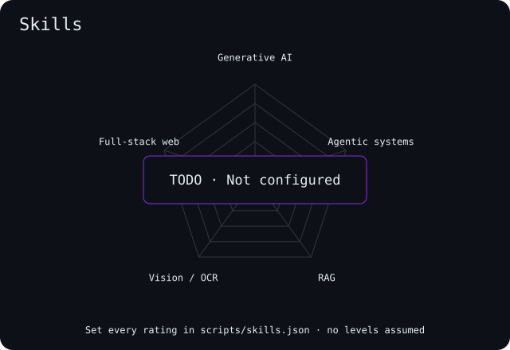
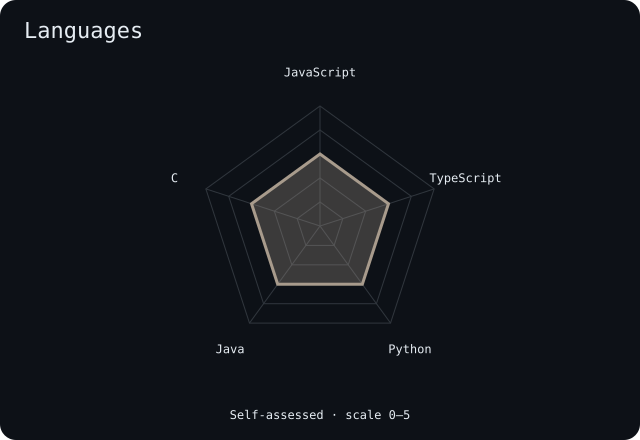
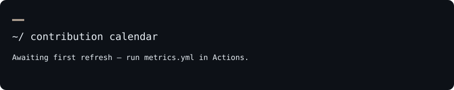
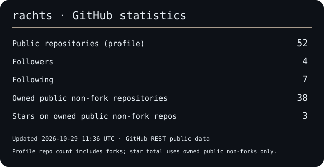

Rachit Kumar Tiwari · rachts · Kolkata, India
About
I'm Rachit, a B.Tech CSE student at MCKV Institute of Engineering (2024–2028), based in Kolkata. I build web apps and explore how voice agents, retrieval and computer vision can make them more useful. I'm looking for SDE, full-stack or AI-ML internships.
- Currently building: Vocalis OS, Vitamend and Kred.ai.
- Portfolio: portfolio-rachts.vercel.app
Toolbox
Also: Gemini and OpenAI APIs
Skill radar


Contribution calendar

Stats

Selected work
Thanks for stopping by.